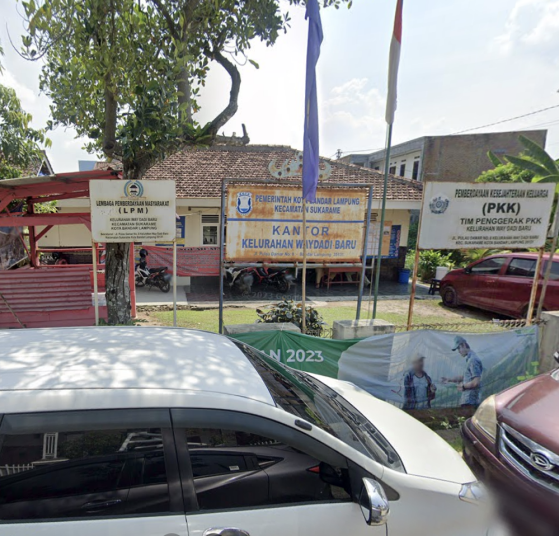

Desa Way Dadi Baru adalah sebuah desa yang terletak di kecematan Sukarame kota Bandar Lampung. Desa Way Dadi Baru terbentu pada tanggal 12 September 2014 dan terdapat 23 RT yang terbagi menjadi dua lingkungan. Pendiri lingkungan I adalah Bapak Drs. Syahferi yang terdiri dari 9 RT. Sedangkan pendiri lingkungan II adalah Bapak Bambang Prayitno yang terdiri dari 14 RT.
penduduk di Kelurahan Way Dadi Baru Kecamatan Sukarame Kota Bandar Lampung sebanyak 8.504 jiwa yang terdiri dari 4.339 laki-laki, dan 4.183 perempuan dengan kepala keluarga sebanyak 2.299 jiwa. masyarakat hidup saling berdampingan dan saling melengkapi satu sama lain di daerah ini juga masih terdapat hubungan kekeluargaan yang erat, karena pada mulanya penduduk daerah ini adalah transmigran dari Pulau Jawa. Meskipun kelurahan Way Dadi telah masuk menjadi wilayah Kotamadya Bandar Lampung namun corak kehidupan masyarakatnya masih menganut Gemeinscaft atau masih sangat guyub dan memiliki kepedulian sosial yang tinggi.

Desa
Kecamatan
Kota
Provinsi
Luas Wilayah
Batas Sebelah Utara
Batas Sebelah Selatan
Batas Sebelah Timur
Batas Sebelah Barat
: Way Dadi Baru
: Sukarame
: Bandar Lampung
: Lampung
: ± 360 Ha
: Kelurahan Sukarame
: kelurahan Way Kandis
: Kodya Bandar Lampung
: kelurahan Harapan Jaya Bandar Lampung